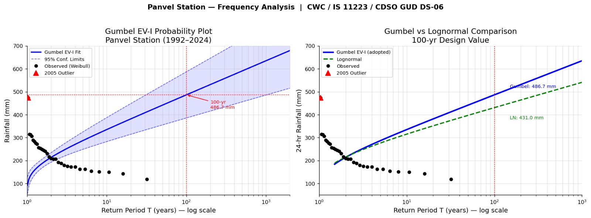
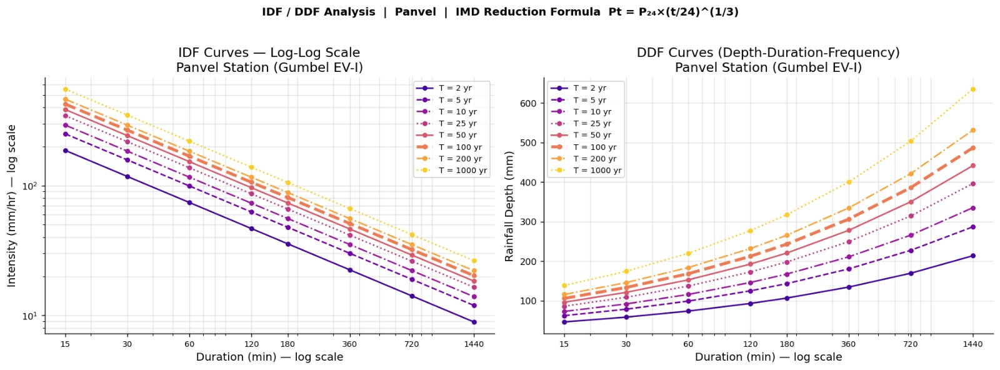
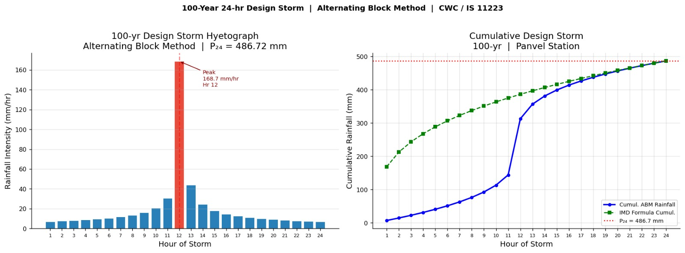

3. IDF Analysis and Design Storm¶
3.1 Rainfall Data and Station Details¶
Annual maximum daily rainfall data spanning 31 years (1992-2024) was obtained from the India Meteorological Department (IMD) for the Panvel raingauge station [Station ID: 102187319], located at 18.9833 deg N, 73.1167 deg E. Two years (1997 and 2006) have missing data and are excluded, resulting in N = 31 observations. The series ranges from 118.6 mm (1995) to 473.5 mm (2005). Descriptive statistics: mean = 225.06 mm, S = 71.84 mm, Cv = 0.319, Cs = 1.357.
3.2 Frequency Analysis - Gumbel EV-I and Lognormal¶

Figure 3.1: Gumbel EV-I Probability Plot and Lognormal Comparison – Panvel Station (1992–2024); 100-yr design rainfall = 486.7 mm
Frequency analysis was performed using Gumbel EV-I and Lognormal distributions as recommended by the CWC Manual on Flood Estimation (1989) and IS 11223. The Gumbel EV-I design rainfall uses the Chow formula XT = x-bar + K*S, where K = (yT - yn)/Sn; yn = 0.5370 and Sn = 1.1156 for N = 31. Both distributions pass Kolmogorov-Smirnov (Dcrit = 0.2443) and Chi-square goodness-of-fit tests at the 5% significance level.
| Parameter | Value |
|---|---|
| N (Record Length) | 31 years (1992-2024) |
| Missing Years | 1997 and 2006 |
| Sample Mean (x-bar) | 225.06 mm |
| Sample Std Dev (S) | 71.84 mm |
| Coefficient of Variation (Cv) | 0.319 |
| Skewness Coefficient (Cs) | 1.357 |
| Gumbel yn (N=31) | 0.5370 |
| Gumbel Sn (N=31) | 1.1156 |
| Lognormal uY | 5.3720 |
| Lognormal sY | 0.2983 |
| K-S Test - Gumbel EV-I | PASS (D=0.0722 \< Dcrit=0.2443) |
| K-S Test - Lognormal | PASS (D=0.0695 \< Dcrit=0.2443) |
| Chi-Square Test (Gumbel) | PASS (Chi2=0.129 \< 5.991) |
| 2005 Outlier Status | CONFIRMED (G=3.46 > Gcrit=2.93; retained conservatively) |
Table 2: Statistical Parameters and Goodness-of-Fit Test Summary
| Return Period T (yr) | Gumbel EV-I XT (mm) | 95% CL Lower (mm) | 95% CL Upper (mm) | Lognormal XT (mm) |
|---|---|---|---|---|
| 2 | 214.08 | 193.16 | 235.00 | 215.29 |
| 5 | 287.07 | 249.12 | 325.03 | 276.73 |
| 10 | 335.40 | 282.99 | 387.81 | 315.55 |
| 25 | 396.46 | 324.84 | 468.07 | 362.95 |
| 50 | 441.76 | 355.60 | 527.92 | 397.29 |
| 100 | 486.72 | 386.00 | 587.45 | 430.95 |
| 200 | 531.52 | 416.20 | 646.84 | 464.25 |
| 1000 | 635.29 | 486.00 | 784.59 | 541.25 |
Table 3: Design Rainfall Comparison - Gumbel EV-I vs Lognormal (All Return Periods)
3.3 100-Year Design Rainfall¶
The 100-year 24-hour design rainfall using Gumbel EV-I is XT=100 = 486.72 mm (95% CI: [386.0, 587.5] mm). The Lognormal method yields 430.95 mm. The Gumbel EV-I value is adopted as the conservative CWC-standard estimate. A Grubbs outlier test identified the 2005 event (473.5 mm) as a statistical outlier (G = 3.46 > Gcrit = 2.93); it has been retained conservatively per CWC guidance.
3.4 IDF Curves¶

Figure 3.2: IDF and DDF Curves – Panvel Station (Gumbel EV-I); IMD Reduction Formula Pt = P24×(t/24)^(1/3)
Rainfall depths and intensities for storm durations of 15 minutes to 24 hours were derived using the IMD Empirical Reduction Formula:
\(\mathbf{P}_{\mathbf{t}}\mathbf{=}\mathbf{P}_{\mathbf{24}}\mathbf{\times}\left( \frac{\mathbf{t}}{\mathbf{24}} \right)^{\left( \frac{\mathbf{1}}{\mathbf{3}} \right)}\) [t in hours]
| Duration | T = 2 yr | T = 5 yr | T = 10 yr | T = 25 yr | T = 50 yr | T = 100 yr | T = 200 yr | T = 1000 yr |
|---|---|---|---|---|---|---|---|---|
| 15 min | 46.75 | 62.70 | 73.25 | 86.58 | 96.48 | 106.30 | 116.08 | 138.75 |
| 30 min | 58.91 | 78.99 | 92.29 | 109.09 | 121.55 | 133.93 | 146.25 | 174.81 |
| 1 hr | 74.22 | 99.52 | 116.28 | 137.44 | 153.15 | 168.74 | 184.27 | 220.24 |
| 2 hr | 93.51 | 125.39 | 146.50 | 173.17 | 192.96 | 212.59 | 232.16 | 277.49 |
| 3 hr | 107.04 | 143.54 | 167.70 | 198.23 | 220.88 | 243.36 | 265.76 | 317.65 |
| 6 hr | 134.86 | 180.84 | 211.29 | 249.75 | 278.29 | 306.62 | 334.84 | 400.21 |
| 12 hr | 169.92 | 227.85 | 266.21 | 314.67 | 350.62 | 386.31 | 421.87 | 504.23 |
| 24 hr | 214.08 | 287.07 | 335.40 | 396.46 | 441.76 | 486.72 | 531.52 | 635.29 |
Table 4: IDF Table - Rainfall Depth Pt (mm) for Various Durations and Return Periods [100-yr column highlighted]
| Duration | T = 2 yr | T = 5 yr | T = 10 yr | T = 25 yr | T = 50 yr | T = 100 yr | T = 200 yr | T = 1000 yr |
|---|---|---|---|---|---|---|---|---|
| 15 min | 187.02 | 250.78 | 293.00 | 346.34 | 385.91 | 425.19 | 464.33 | 554.98 |
| 30 min | 117.81 | 157.98 | 184.58 | 218.18 | 243.11 | 267.85 | 292.51 | 349.62 |
| 1 hr | 74.22 | 99.52 | 116.28 | 137.44 | 153.15 | 168.74 | 184.27 | 220.24 |
| 2 hr | 46.75 | 62.70 | 73.25 | 86.58 | 96.48 | 106.30 | 116.08 | 138.75 |
| 3 hr | 35.68 | 47.85 | 55.90 | 66.08 | 73.63 | 81.12 | 88.59 | 105.88 |
| 6 hr | 22.48 | 30.14 | 35.22 | 41.63 | 46.38 | 51.10 | 55.81 | 66.70 |
| 12 hr | 14.16 | 18.99 | 22.18 | 26.22 | 29.22 | 32.19 | 35.16 | 42.02 |
| 24 hr | 8.92 | 11.96 | 13.97 | 16.52 | 18.41 | 20.28 | 22.15 | 26.47 |
Table 5: IDF Table - Rainfall Intensity It (mm/hr) for Various Durations and Return Periods [100-yr column highlighted]
Note
Validation: The 24-hr 100-yr intensity = 486.72 / 24 = 20.28 mm/hr. IMD isopluvial maps for the Panvel-Konkan region indicate 24-hr 100-yr rainfall of 400-520 mm. CHECK PASS.
3.5 Design Storm Temporal Distribution¶
Two temporal distribution approaches were evaluated for the 100-year 24-hour design storm:
3.5.1 Alternating Block Method (ABM) - Reference Computation¶

Figure 3.3: 100-Year 24-hr Design Storm Hyetograph (ABM) and Cumulative Rainfall – Panvel Station; P24 = 486.72 mm; Peak Intensity = 168.7 mm/hr at Hour 12
The ABM (Chow, Maidment & Mays, 1988) was computed to verify the temporal structure of the design storm and to provide a comparative reference. In this method, incremental rainfall depths for each hour are arranged symmetrically with the peak block positioned at Hour 12. Total storm depth = 486.72 mm; peak hourly block = 168.74 mm (34.67% of total). The ABM computation and resulting hyetograph are provided in Annexure III for reference.
| Hour (t) | Incremental Rainfall (mm) | Intensity (mm/hr) | Cumulative Rainfall (mm) | % of Total Rainfall | Rank of Block |
|---|---|---|---|---|---|
| 1 | 7.06 | 7.06 | 7.06 | 1.45 | 23 |
| 2 | 7.51 | 7.51 | 14.57 | 1.54 | 21 |
| 3 | 8.04 | 8.04 | 22.61 | 1.65 | 19 |
| 4 | 8.68 | 8.68 | 31.29 | 1.78 | 17 |
| 5 | 9.46 | 9.46 | 40.75 | 1.94 | 15 |
| 6 | 10.45 | 10.45 | 51.20 | 2.15 | 13 |
| 7 | 11.73 | 11.73 | 62.93 | 2.41 | 11 |
| 8 | 13.51 | 13.51 | 76.44 | 2.78 | 9 |
| 9 | 16.17 | 16.17 | 92.61 | 3.32 | 7 |
| 10 | 20.68 | 20.68 | 113.29 | 4.25 | 5 |
| 11 | 30.77 | 30.77 | 144.06 | 6.32 | 3 |
| 12 | 168.74 | 168.74 | 312.80 | 34.67 | 1 (peak) |
| 13 | 43.86 | 43.86 | 356.66 | 9.01 | 2 |
| 14 | 24.49 | 24.49 | 381.15 | 5.03 | 4 |
| 15 | 18.08 | 18.08 | 399.23 | 3.71 | 6 |
| 16 | 14.69 | 14.69 | 413.92 | 3.02 | 8 |
| 17 | 12.55 | 12.55 | 426.47 | 2.58 | 10 |
| 18 | 11.04 | 11.04 | 437.51 | 2.27 | 12 |
| 19 | 9.92 | 9.92 | 447.43 | 2.04 | 14 |
| 20 | 9.05 | 9.05 | 456.48 | 1.86 | 16 |
| 21 | 8.35 | 8.35 | 464.83 | 1.71 | 18 |
| 22 | 7.76 | 7.76 | 472.59 | 1.60 | 20 |
| 23 | 7.28 | 7.28 | 479.86 | 1.49 | 22 |
| 24 | 6.86 | 6.86 | 486.72 | 1.41 | 24 |
Table 6: 100-Year 24-Hour Design Storm - ABM Temporal Distribution (Reference Only) [Peak block at Hour 12 highlighted]
Note
Sum of all incremental blocks = 486.72 mm = P24,100 (CHECK PASS). The ABM was computed for reference verification only. The actual HEC-HMS simulation used the SCS Type II distribution as described in Section 3.5.2.
3.5.2 SCS Type II Distribution - Design Storm Used in HEC-HMS¶
The SCS Type II 24-hour synthetic storm distribution was adopted as the actual design storm input to HEC-HMS. The SCS Type II distribution is the standard for use with the SCS Unit Hydrograph transform method and is widely accepted for design flood estimation in Indian catchments consistent with CWC practice. This distribution concentrates approximately 60% of the total rainfall in a 6-hour period centred on Hour 12, producing a more realistic peak runoff response than the ABM for catchments of this physiographic type.
The design storm was applied as a Hypothetical Storm in HEC-HMS with the following specifications:
-
Storm Type: Hypothetical Storm (HEC-HMS Meteorologic Model)
-
Distribution: SCS Type II (24-hour)
-
Total Depth: 486.72 mm (100-year Gumbel EV-I estimate)
-
Duration: 24 hours
-
Time Step: 1 hour
Note
The SCS Type II distribution is more conservative than the ABM for this catchment type, producing a higher and sharper peak discharge due to the concentration of rainfall in the central 6-hour window.
Reference Script¶
The following Python script (scripts/idf_gumbel_analysis.py) implements the complete Gumbel EV-I frequency analysis, Lognormal comparison, IMD reduction formula for IDF curves, and Alternating Block Method (ABM) temporal distribution corresponding to the methodology described above:
"""
idf_gumbel_analysis.py
Reference implementation of the IDF / Design-Storm methodology described in
Chapter 3 ("IDF Analysis and Design Storm") of the Dehrang Dam Dam-Break
Analysis report.
Pipeline implemented:
1. Gumbel EV-I frequency analysis of the annual-maximum 24-hr rainfall
series (Chow's formula, N=31, missing years 1997 & 2006 excluded).
2. Lognormal frequency analysis as a cross-check.
3. Kolmogorov-Smirnov goodness-of-fit test for both distributions.
4. 100-yr 24-hr design rainfall depth.
5. IDF table (depth & intensity) for standard sub-daily durations using
the IMD empirical short-duration reduction formula.
6. Alternating Block Method (ABM) 24-hour hyetograph (reference only —
NOT what is fed to HEC-HMS; HEC-HMS uses the SCS Type II distribution,
see Section 3.5.2 of the report).
Replace RAINFALL_SERIES below with the actual 31-year IMD annual-maximum
series for the Panvel station (Station ID 102187319) before running —
the placeholder values here are only illustrative and will not reproduce
the report's exact published numbers (mean 225.06 mm, S 71.84 mm, etc.)
unless the real series is substituted.
"""
from __future__ import annotations
import math
from dataclasses import dataclass
import numpy as np
from scipy import stats
# ---------------------------------------------------------------------------
# 1. INPUT: annual-maximum 24-hr rainfall series (mm), Panvel station
# Replace with the real 1992-2024 IMD series (31 values; 1997 & 2006
# excluded as missing).
# ---------------------------------------------------------------------------
RAINFALL_SERIES: list[float] = [
# 1992, 1993, 1994, 1995, 1996, 1998, 1999, 2000, ... 2024
# <-- populate with the real annual-maximum daily rainfall (mm) values -->
]
@dataclass
class GumbelResult:
mean: float
std: float
cv: float
skew: float
yn: float
sn: float
design_values: dict[int, float]
ks_stat: float
ks_pass: bool
# ---------------------------------------------------------------------------
# Gumbel reduced-variate reduction factors (yn, Sn) by sample size N.
# Standard table (Chow, Maidment & Mays, 1988 / CWC Flood Estimation Manual).
# Only the entries actually needed are included; extend as required.
# ---------------------------------------------------------------------------
GUMBEL_YN_SN_TABLE = {
30: (0.5362, 1.1124),
31: (0.5370, 1.1156),
32: (0.5380, 1.1193),
35: (0.5403, 1.1285),
40: (0.5436, 1.1413),
}
def gumbel_yn_sn(n: int) -> tuple[float, float]:
if n in GUMBEL_YN_SN_TABLE:
return GUMBEL_YN_SN_TABLE[n]
raise ValueError(
f"yn/Sn not tabulated for N={n}; add the value from the standard "
"Gumbel reduction-factor table before proceeding."
)
def gumbel_ev1_frequency_analysis(
series: list[float], return_periods: list[int]
) -> GumbelResult:
"""Chow's formula: X_T = x_bar + K * S, K = (y_T - y_n) / S_n."""
x = np.asarray(series, dtype=float)
n = len(x)
x_bar = x.mean()
s = x.std(ddof=1)
cv = s / x_bar
cs = stats.skew(x, bias=False)
yn, sn = gumbel_yn_sn(n)
design_values = {}
for t in return_periods:
y_t = -math.log(math.log(t / (t - 1)))
k = (y_t - yn) / sn
design_values[t] = x_bar + k * s
# Kolmogorov-Smirnov goodness-of-fit vs. fitted Gumbel CDF
loc, scale = stats.gumbel_r.fit(x)
ks_stat, _ = stats.kstest(x, "gumbel_r", args=(loc, scale))
# Critical D at 5% significance (approx. 1.36/sqrt(N))
d_crit = 1.36 / math.sqrt(n)
return GumbelResult(
mean=x_bar,
std=s,
cv=cv,
skew=cs,
yn=yn,
sn=sn,
design_values=design_values,
ks_stat=ks_stat,
ks_pass=ks_stat < d_crit,
)
def lognormal_frequency_analysis(
series: list[float], return_periods: list[int]
) -> dict[int, float]:
"""Lognormal design values via z_T from the standard normal table."""
x = np.asarray(series, dtype=float)
ln_x = np.log(x)
uy, sy = ln_x.mean(), ln_x.std(ddof=1)
design_values = {}
for t in return_periods:
z_t = stats.norm.ppf(1 - 1 / t)
design_values[t] = math.exp(uy + z_t * sy)
return design_values
# ---------------------------------------------------------------------------
# IMD empirical short-duration reduction formula:
# P_t = P24 * (t / 24) ** (1/3)
# where P_t is the rainfall depth (mm) for duration t (hours), P24 the
# 24-hr depth. This is the standard IMD reduction formula used for
# sub-daily disaggregation when short-duration gauge data are unavailable.
# ---------------------------------------------------------------------------
DURATIONS_HR = {
"15 min": 0.25,
"30 min": 0.5,
"1 hr": 1.0,
"2 hr": 2.0,
"3 hr": 3.0,
"6 hr": 6.0,
"12 hr": 12.0,
"24 hr": 24.0,
}
def build_idf_table(p24_by_return_period: dict[int, float]) -> dict[str, dict[int, float]]:
"""Returns {duration_label: {return_period: depth_mm}}."""
table: dict[str, dict[int, float]] = {}
for label, t_hr in DURATIONS_HR.items():
table[label] = {
rp: p24 * (t_hr / 24.0) ** (1 / 3)
for rp, p24 in p24_by_return_period.items()
}
return table
def idf_intensity_table(depth_table: dict[str, dict[int, float]]) -> dict[str, dict[int, float]]:
"""Convert depth (mm) table to intensity (mm/hr) table."""
intensity: dict[str, dict[int, float]] = {}
for label, rp_depths in depth_table.items():
t_hr = DURATIONS_HR[label]
intensity[label] = {rp: depth / t_hr for rp, depth in rp_depths.items()}
return intensity
# ---------------------------------------------------------------------------
# Alternating Block Method (ABM) — 24 one-hour blocks, largest block at the
# storm centre (Hour 12), alternating outward. Reference only (Section 3.5.1
# / Annexure III) — HEC-HMS uses the SCS Type II distribution instead.
# ---------------------------------------------------------------------------
def alternating_block_method(p24: float, n_hours: int = 24) -> list[float]:
"""Returns the ordered 1-hr incremental-depth hyetograph (mm), length n_hours."""
# Depths at each cumulative duration via the same IMD reduction formula
cum_depth = [p24 * (t / n_hours) ** (1 / 3) for t in range(1, n_hours + 1)]
incremental = [cum_depth[0]] + [
cum_depth[i] - cum_depth[i - 1] for i in range(1, n_hours)
]
incremental_sorted = sorted(incremental, reverse=True)
# Alternate blocks around the centre position
centre = n_hours // 2
hyetograph = [0.0] * n_hours
hyetograph[centre] = incremental_sorted[0]
left, right = centre - 1, centre + 1
toggle_left = True
for block in incremental_sorted[1:]:
if toggle_left and left >= 0:
hyetograph[left] = block
left -= 1
elif right < n_hours:
hyetograph[right] = block
right += 1
toggle_left = not toggle_left
return hyetograph
if __name__ == "__main__":
RETURN_PERIODS = [2, 5, 10, 25, 50, 100, 200, 1000]
if not RAINFALL_SERIES:
raise SystemExit(
"Populate RAINFALL_SERIES with the 31-year IMD annual-maximum "
"series before running this script."
)
gumbel = gumbel_ev1_frequency_analysis(RAINFALL_SERIES, RETURN_PERIODS)
lognormal = lognormal_frequency_analysis(RAINFALL_SERIES, RETURN_PERIODS)
print(f"N = {len(RAINFALL_SERIES)}")
print(f"Mean = {gumbel.mean:.2f} mm, Std Dev = {gumbel.std:.2f} mm, "
f"Cv = {gumbel.cv:.3f}, Cs = {gumbel.skew:.3f}")
print(f"Gumbel yn = {gumbel.yn}, Sn = {gumbel.sn}")
print(f"K-S statistic = {gumbel.ks_stat:.4f} "
f"({'PASS' if gumbel.ks_pass else 'FAIL'})")
print("\n100-yr design rainfall (Gumbel EV-I):",
f"{gumbel.design_values[100]:.2f} mm")
print("100-yr design rainfall (Lognormal): ",
f"{lognormal[100]:.2f} mm")
depth_table = build_idf_table(gumbel.design_values)
intensity_table = idf_intensity_table(depth_table)
print("\nIDF Depth Table (mm):")
for label, rp_vals in depth_table.items():
row = " ".join(f"{rp}yr={v:.2f}" for rp, v in rp_vals.items())
print(f" {label:8s}: {row}")
hyetograph = alternating_block_method(gumbel.design_values[100])
print("\nABM 100-yr 24-hr hyetograph (mm/hr), Hour 1-24:")
print(" " + ", ".join(f"{v:.2f}" for v in hyetograph))